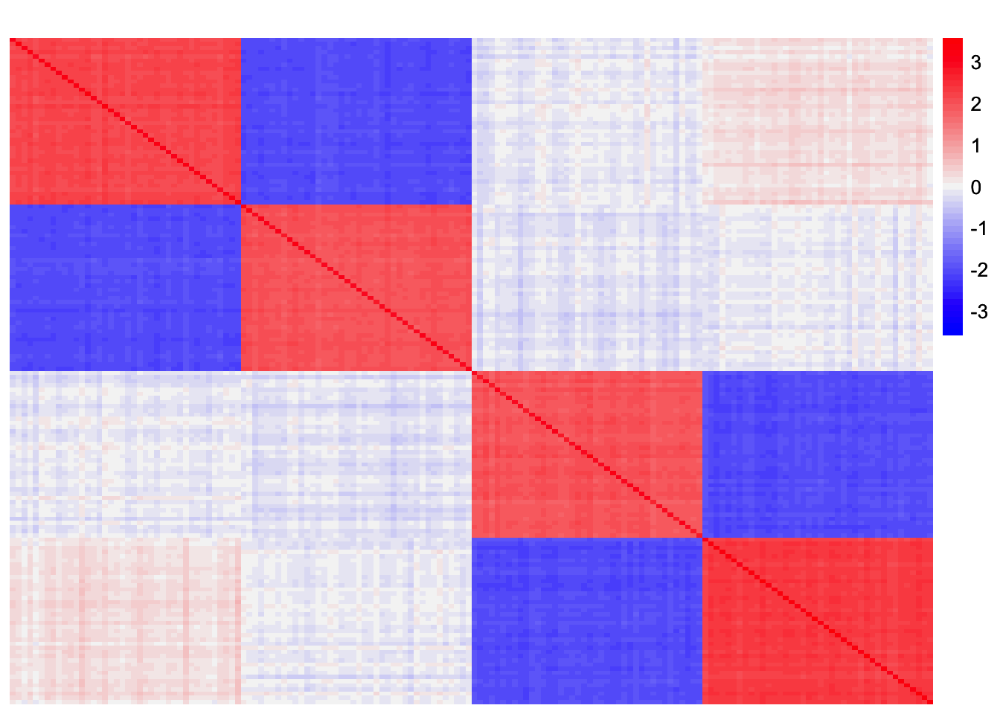
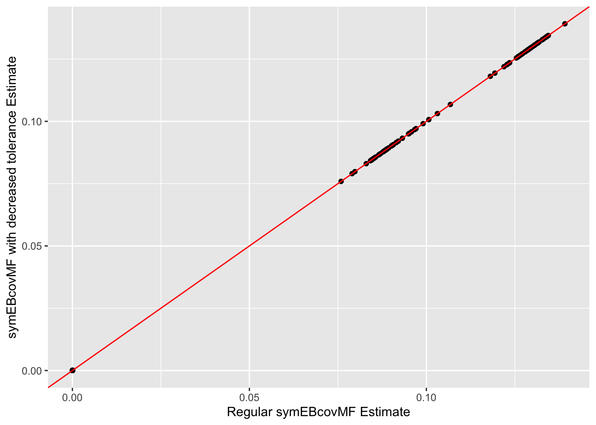
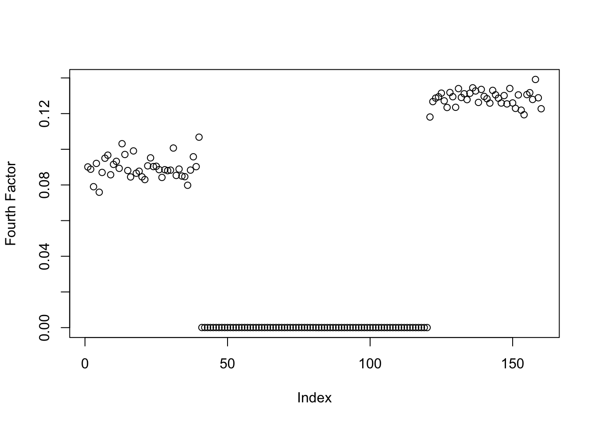
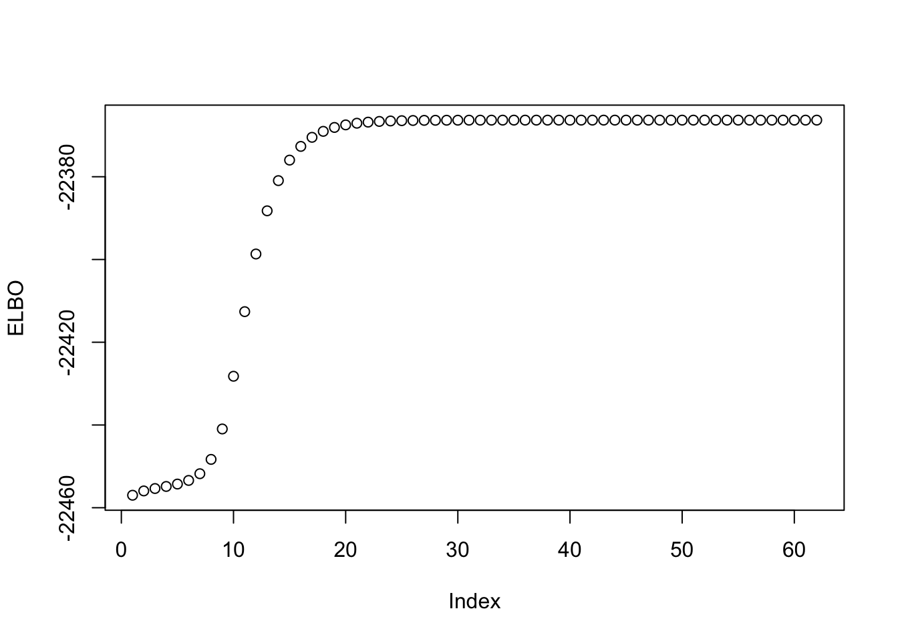
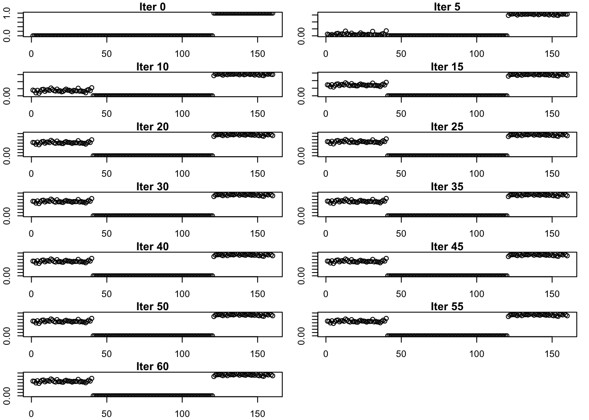
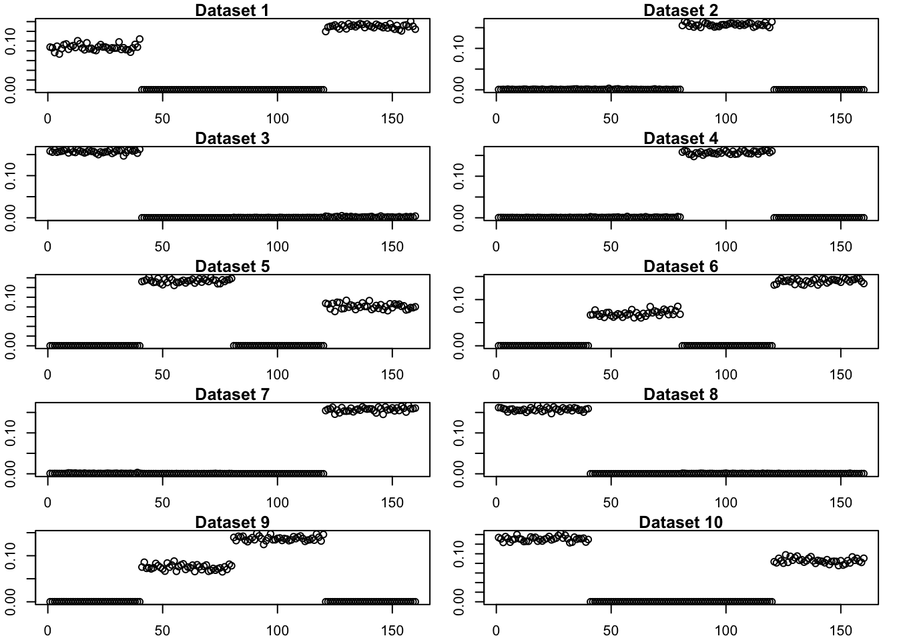

Last updated: 2025-04-30
Checks: 7 0
Knit directory:
symmetric_covariance_decomposition/
This reproducible R Markdown analysis was created with workflowr (version 1.7.1). The Checks tab describes the reproducibility checks that were applied when the results were created. The Past versions tab lists the development history.
Great! Since the R Markdown file has been committed to the Git repository, you know the exact version of the code that produced these results.
Great job! The global environment was empty. Objects defined in the global environment can affect the analysis in your R Markdown file in unknown ways. For reproduciblity it’s best to always run the code in an empty environment.
The command set.seed(20250408) was run prior to running
the code in the R Markdown file. Setting a seed ensures that any results
that rely on randomness, e.g. subsampling or permutations, are
reproducible.
Great job! Recording the operating system, R version, and package versions is critical for reproducibility.
Nice! There were no cached chunks for this analysis, so you can be confident that you successfully produced the results during this run.
Great job! Using relative paths to the files within your workflowr project makes it easier to run your code on other machines.
Great! You are using Git for version control. Tracking code development and connecting the code version to the results is critical for reproducibility.
The results in this page were generated with repository version 0495c47. See the Past versions tab to see a history of the changes made to the R Markdown and HTML files.
Note that you need to be careful to ensure that all relevant files for
the analysis have been committed to Git prior to generating the results
(you can use wflow_publish or
wflow_git_commit). workflowr only checks the R Markdown
file, but you know if there are other scripts or data files that it
depends on. Below is the status of the Git repository when the results
were generated:
Ignored files:
Ignored: .DS_Store
Ignored: .Rhistory
Untracked files:
Untracked: analysis/symebcovmf_binary_prior_tree_exploration.Rmd
Untracked: analysis/unbal_nonoverlap.Rmd
Untracked: analysis/unbal_nonoverlap_exploration.Rmd
Note that any generated files, e.g. HTML, png, CSS, etc., are not included in this status report because it is ok for generated content to have uncommitted changes.
These are the previous versions of the repository in which changes were
made to the R Markdown
(analysis/symebcovmf_gb_tree_exploration.Rmd) and HTML
(docs/symebcovmf_gb_tree_exploration.html) files. If you’ve
configured a remote Git repository (see ?wflow_git_remote),
click on the hyperlinks in the table below to view the files as they
were in that past version.
| File | Version | Author | Date | Message |
|---|---|---|---|---|
| Rmd | 0495c47 | Annie Xie | 2025-04-30 | Edit analysis for gb symebcovmf in tree setting |
| html | 33244cf | Annie Xie | 2025-04-30 | Build site. |
| Rmd | 2f28381 | Annie Xie | 2025-04-30 | Add exploration of gb symebcovmf in tree setting |
In this analysis, I am interested in exploring symEBcovMF with the generalized binary prior in the tree setting.
When applying symEBcovMF with generalized binary prior to tree data, I found that instead of population effect factors, the method would group two population effects together. I tried using the point-exponential prior to remedy this, but found that the point-exponential prior also found factors which grouped two population effects. Therefore, I am interested in exploring the following questions: 1) does the method prefer this over solution over our desired solution? does it have a higher elbo? 2) does decreasing the convergence tolerance fix this? 3) how often does this happen?
library(ebnm)
library(pheatmap)
library(ggplot2)source('code/visualization_functions.R')
source('code/symebcovmf_functions.R')In this analysis, I will focus on fitting the fourth factor. Let \(S\) be the scaled Gram matrix, formed from tree-structured data matrix \(X\). Let \(\hat{\lambda}_1, \dots \hat{\lambda}_3, \ \hat{\ell}_1, \dots \hat{\ell}_3\) be the output from running symEBcovMF (with refitting) with generalized binary prior on \(S\). I will read in the residual matrix, \(S - \sum_{k=1}^{3}\hat{\lambda}_k \hat{\ell}_k \hat{\ell}_k'\).
S <- readRDS('data/symebcovmf_gb_tree_resid_matrix.rds')This is a heatmap of the residual matrix, \(S - \sum_{k=1}^{3}\hat{\lambda}_k \hat{\ell}_k \hat{\ell}_k'\):
plot_heatmap(S, colors_range = c('blue','gray96','red'), brks = seq(-max(abs(S)), max(abs(S)), length.out = 50))
| Version | Author | Date |
|---|---|---|
| 33244cf | Annie Xie | 2025-04-30 |
Here, I use symEBcovMF with point-exponential prior to fit the fourth factor.
symebcovmf_init_obj <- sym_ebcovmf_init(S)
symebcovmf_exp_fit <- sym_ebcovmf_r1_fit(S, symebcovmf_init_obj, ebnm_fn = ebnm::ebnm_point_exponential, maxiter = 100, tol = 10^(-8))This is a plot of the estimate for the fourth factor:
plot(symebcovmf_exp_fit$L_pm[,1], ylab = 'Fourth Factor')
| Version | Author | Date |
|---|---|---|
| 33244cf | Annie Xie | 2025-04-30 |
This is the ELBO:
symebcovmf_exp_fit$elbo[1] -22366.32Here, I try decreasing the convergence tolerance to see if that yields more shrinkage for one of the group effects.
symebcovmf_exp_fit_decrease_tol <- sym_ebcovmf_r1_fit(S, symebcovmf_init_obj, ebnm_fn = ebnm::ebnm_point_exponential, maxiter = 100, tol = 10^(-15))[1] "elbo decreased by 3.63797880709171e-12"This is a plot of the estimate for the fourth factor:
plot(symebcovmf_exp_fit_decrease_tol$L_pm[,1], ylab = 'Fourth Factor')
| Version | Author | Date |
|---|---|---|
| 33244cf | Annie Xie | 2025-04-30 |
This is the ELBO:
symebcovmf_exp_fit_decrease_tol$elbo[1] -22366.32This is a scatter plot of the entries of the two estimates:
ggplot(data = NULL, aes(y = symebcovmf_exp_fit_decrease_tol$L_pm[,1], x = symebcovmf_exp_fit$L_pm[,1])) + geom_point() + geom_abline(slope = 1, intercept = 0, color = 'red') + xlab('Regular symEBcovMF Estimate') + ylab('symEBcovMF with decreased tolerance Estimate')
| Version | Author | Date |
|---|---|---|
| 33244cf | Annie Xie | 2025-04-30 |
I found that decreasing the convergence tolerance did not lead to further shrinkage of either of the group effects. The method does stop because there is a very small decrease in objective function (the decrease is of order \(10^{-12}\), so I’m guessing that it is a numerical issue), so it’s possible that if I had let the method keep going, it would eventually zero out the first group effect. However, it seems like there is no difference between these two estimates. So there is minimal empirical evidence to suggest the extra iterations will yield further shrinkage.
Here, I try initializing from the true group effect factor.
true_factor_4 <- rep(c(0,1), times = c(120, 40))
symebcovmf_exp_true_init <- sym_ebcovmf_r1_fit(S, symebcovmf_init_obj, ebnm_fn = ebnm::ebnm_point_exponential, maxiter = 100, tol = 10^(-8), v_init = true_factor_4)This is a plot of the estimate for the fourth factor:
plot(symebcovmf_exp_true_init$L_pm[,1], ylab = 'Fourth Factor')
| Version | Author | Date |
|---|---|---|
| 33244cf | Annie Xie | 2025-04-30 |
This is the ELBO:
symebcovmf_exp_true_init$elbo[1] -22366.32This is a plot of the progression of the ELBO:
plot(symebcovmf_exp_true_init$vec_elbo_full[-1], ylab = 'ELBO')
| Version | Author | Date |
|---|---|---|
| 33244cf | Annie Xie | 2025-04-30 |
These are plots of the progression of the estimate:
estimates_exp_true_init_list <- list(true_factor_4)
for (i in 1:12){
estimates_exp_true_init_list[[(i+1)]] <- sym_ebcovmf_r1_fit(S, symebcovmf_init_obj, ebnm_fn = ebnm::ebnm_point_exponential, maxiter = (i-1)*5+5, tol = 10^(-8), v_init = true_factor_4)$L_pm[,1]
}idx_seq <- seq(from = 0, to = 60, by = 5)
par(mfrow = c(7,2), mar = c(2, 2, 1, 1) + 0.1)
for (i in 1:13){
plot(estimates_exp_true_init_list[[i]], main = paste('Iter', idx_seq[i]), ylab = 'L')
}
par(mfrow = c(1,1))
| Version | Author | Date |
|---|---|---|
| 33244cf | Annie Xie | 2025-04-30 |
Initializing from the true factor yields the same estimate. This suggests that the method does prefer this estimate. Looking at the progression of the estimate, we see that the first group effect starts at zero and then gradually increases.
sim_4pops <- function(args) {
set.seed(args$seed)
n <- sum(args$pop_sizes)
p <- args$n_genes
FF <- matrix(rnorm(7 * p, sd = rep(args$branch_sds, each = p)), ncol = 7)
# if (args$constrain_F) {
# FF_svd <- svd(FF)
# FF <- FF_svd$u
# FF <- t(t(FF) * branch_sds * sqrt(p))
# }
LL <- matrix(0, nrow = n, ncol = 7)
LL[, 1] <- 1
LL[, 2] <- rep(c(1, 1, 0, 0), times = args$pop_sizes)
LL[, 3] <- rep(c(0, 0, 1, 1), times = args$pop_sizes)
LL[, 4] <- rep(c(1, 0, 0, 0), times = args$pop_sizes)
LL[, 5] <- rep(c(0, 1, 0, 0), times = args$pop_sizes)
LL[, 6] <- rep(c(0, 0, 1, 0), times = args$pop_sizes)
LL[, 7] <- rep(c(0, 0, 0, 1), times = args$pop_sizes)
E <- matrix(rnorm(n * p, sd = args$indiv_sd), nrow = n)
Y <- LL %*% t(FF) + E
YYt <- (1/p)*tcrossprod(Y)
return(list(Y = Y, YYt = YYt, LL = LL, FF = FF, K = ncol(LL)))
}Here, I generate 10 tree-structured datasets and apply symEBcovMF in the way I had done previously – I fit the first three factors with generalized binary prior and then fit the fourth factor with point-exponential prior.
exp_symebcovmf_lists <- list()
# rank_3_gb_init_fits <- list()
for(i in c(1:10)){
# generate data
sim_args = list(pop_sizes = rep(40, 4), n_genes = 1000, branch_sds = rep(2,7), indiv_sd = 1, seed = i)
sim_data <- sim_4pops(sim_args)
# apply gb symebcovmf
rank_3_gb_init_fit <- sym_ebcovmf_fit(S = sim_data$YYt, ebnm_fn = ebnm::ebnm_generalized_binary, K = 3, maxiter = 500, rank_one_tol = 10^(-8), tol = 10^(-8), refit_lam = TRUE)
# rank_3_gb_init_fits[[i]] <- rank_3_gb_init_fit$L_pm
exp_symebcovmf_lists[[i]] <- sym_ebcovmf_r1_fit(sim_data$YYt, rank_3_gb_init_fit, ebnm_fn = ebnm::ebnm_point_exponential, maxiter = 500, tol = 10^(-8))$L_pm[,4]
}[1] "elbo decreased by 0.185693113584421"
[1] "elbo decreased by 0.284651663008844"
[1] "elbo decreased by 0.1485572069505"
[1] "elbo decreased by 0.00441577250603586"
[1] "elbo decreased by 0.00189985625547706"
[1] "elbo decreased by 0.322963009672094"
[1] "elbo decreased by 0.194482675709878"
[1] "elbo decreased by 0.00214818814129103"
[1] "elbo decreased by 0.280296388133138"
[1] "elbo decreased by 0.0033637767410255"
[1] "elbo decreased by 0.00589060871425318"
[1] "elbo decreased by 0.229601415045181"
[1] "elbo decreased by 0.119170926787774"par(mfrow = c(5,2), mar = c(2, 2, 1, 1) + 0.1)
for (i in 1:10){
plot(exp_symebcovmf_lists[[i]], main = paste('Dataset', i), ylab = 'Fourth Factor')
}
| Version | Author | Date |
|---|---|---|
| 33244cf | Annie Xie | 2025-04-30 |
par(mfrow = c(1,1))Half of the datasets find a single population effect in the fourth factor and the other half group two population effects. A follow up question is whether we can find a way to ensure we have a situation where the method finds single group effects as opposed to grouping two group effects.
sessionInfo()R version 4.3.2 (2023-10-31)
Platform: aarch64-apple-darwin20 (64-bit)
Running under: macOS Sonoma 14.4.1
Matrix products: default
BLAS: /Library/Frameworks/R.framework/Versions/4.3-arm64/Resources/lib/libRblas.0.dylib
LAPACK: /Library/Frameworks/R.framework/Versions/4.3-arm64/Resources/lib/libRlapack.dylib; LAPACK version 3.11.0
locale:
[1] en_US.UTF-8/en_US.UTF-8/en_US.UTF-8/C/en_US.UTF-8/en_US.UTF-8
time zone: America/Chicago
tzcode source: internal
attached base packages:
[1] stats graphics grDevices utils datasets methods base
other attached packages:
[1] ggplot2_3.5.1 pheatmap_1.0.12 ebnm_1.1-34 workflowr_1.7.1
loaded via a namespace (and not attached):
[1] gtable_0.3.5 xfun_0.48 bslib_0.8.0 processx_3.8.4
[5] lattice_0.22-6 callr_3.7.6 vctrs_0.6.5 tools_4.3.2
[9] ps_1.7.7 generics_0.1.3 tibble_3.2.1 fansi_1.0.6
[13] highr_0.11 pkgconfig_2.0.3 Matrix_1.6-5 SQUAREM_2021.1
[17] RColorBrewer_1.1-3 lifecycle_1.0.4 truncnorm_1.0-9 farver_2.1.2
[21] compiler_4.3.2 stringr_1.5.1 git2r_0.33.0 munsell_0.5.1
[25] getPass_0.2-4 httpuv_1.6.15 htmltools_0.5.8.1 sass_0.4.9
[29] yaml_2.3.10 later_1.3.2 pillar_1.9.0 jquerylib_0.1.4
[33] whisker_0.4.1 cachem_1.1.0 trust_0.1-8 RSpectra_0.16-2
[37] tidyselect_1.2.1 digest_0.6.37 stringi_1.8.4 dplyr_1.1.4
[41] ashr_2.2-66 labeling_0.4.3 splines_4.3.2 rprojroot_2.0.4
[45] fastmap_1.2.0 grid_4.3.2 colorspace_2.1-1 cli_3.6.3
[49] invgamma_1.1 magrittr_2.0.3 utf8_1.2.4 withr_3.0.1
[53] scales_1.3.0 promises_1.3.0 horseshoe_0.2.0 rmarkdown_2.28
[57] httr_1.4.7 deconvolveR_1.2-1 evaluate_1.0.0 knitr_1.48
[61] irlba_2.3.5.1 rlang_1.1.4 Rcpp_1.0.13 mixsqp_0.3-54
[65] glue_1.8.0 rstudioapi_0.16.0 jsonlite_1.8.9 R6_2.5.1
[69] fs_1.6.4